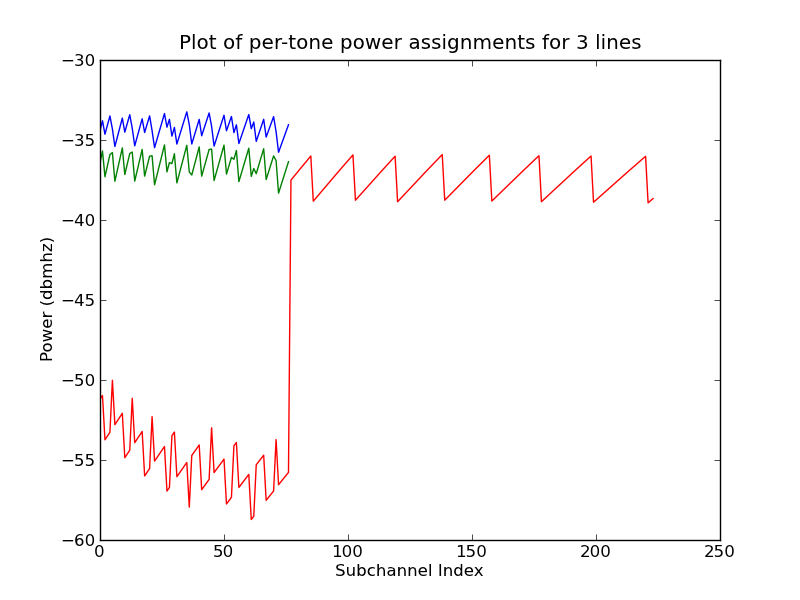

The natural verification method is to compare returned PSD's against the previously-verified CPU implementation (Figure 41). What is interesting about this result is that while power allocations match almost perfectly, bit allocations differ, it appears, significantly. This is due to the inherent numerical instability of the Lagrangian maximisation method. In relative terms, single-differences in bit allocations correspond to minimal PSD changes, and the absolute difference in total bit-load between CPU and GPU versions is less than 35 bits-per-frame over the entire bundle.
As this is an investigation into the viability of GPU implementations and not a study in their correctness, it is felt that this is an acceptable margin of error.
This verification stands for both single and multi-GPU executions.
Appendix 41:
Comparison of three line, near far scenario OSB: CPU/GPU
|
[OSB CPU Power Allocation]
[OSB GPU Power Allocation]
[OSB CPU Bit-load]
[OSB GPU Bit-load] |
Andrew Bolster
2011-05-22